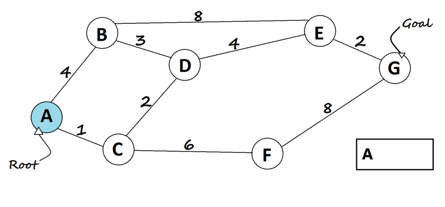

Depth first search (DFS) algorithm starts with the initial node of the graph G, and then goes to deeper
and deeper until we find the goal node or the node which has no children. The algorithm, then backtracks
from the dead end towards the most recent node that is yet to be completely unexplored.
The data structure which is being used in DFS is stack. The process is similar to BFS algorithm. In DFS,
the edges that leads to an unvisited node are called discovery edges while the edges that leads to an
already visited node are called block edges.
Algorithm
Step 1: SET STATUS = 1 (ready state) for each node in G
Step 2: Push the starting node A on the stack and set its STATUS = 2 (waiting state)
Step 3: Repeat Steps 4 and 5 until STACK is empty
Step 4: Pop the top node N. Process it and set its STATUS = 3 (processed state)
Step 5: Push on the stack all the neighbours of N that are in the ready state (whose
STATUS = 1) and set their
STATUS = 2 (waiting state)
[END OF LOOP]
Step 6: EXIT
Example

It starts at the root and explores one of it’s children’s sub tree, and then move to the next
child’s sub tree, and so on. It uses stack, or recursion to perform the DFS.
Recursive
Mark the current node as visited(initially current node is the root node)
Check if current node is the goal, If so, then return it.
Iterate over children nodes of current node, and do the following:
Check if a child node is not visited.
If so, then, mark it as visited.
Go to it's sub tree recursively until you find the goal node(In other words, do the
same steps here passing the child node as the current node in the next recursive
call).
If the child node has the goal node in this sub tree, then, return it.
If goal node is not found, then goal node is not in the tree!
Iterative
Add root node to the stack.
Loop on the stack as long as it's not empty.
Get the node at the top of the stack(current), mark it as visited, and remove it.
For every non-visited child of the current node, do the following:
Check if it's the goal node, If so, then return this child node.